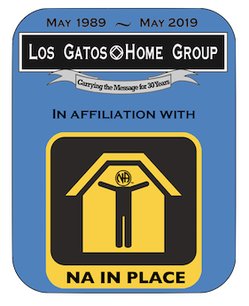

Frequently Asked Questions
- What is NA in Place?
- Why is smoking prohibited during meetings?
- Describe the affiliation between NA in Place and Los Gatos Home Group?
- Where is Los Gatos Home Group Located?
- Why are you not collecting Seventh Tradition?
- I want to do service. Are service positions available?
- When is the Group Conscience Meeting?
What is NA in Place?
NA In Place is an online meeting place brought to you by the members of Los Gatos Home Group in Los Gatos California, for humans who are addicts and addicts who are humans to gather and share their experience, strength and hope, and to help carry the NA message to the addict who still suffers.
We hold several online meetings a day using the Zoom video conferencing app.
Why is smoking prohibited during meetings?
Several folks have mentioned that vaping and smoking can be
triggering. Also it's not permitted at our home group meetings. Given
it's very simple to disable the camera, or to smoke off-camera, we
made the call to request folks don't smoke or vape on camera. Thanks for your understanding.
Where is Los Gatos Home Group Located?
The Los Gatos Home Group meeting place is located at 208 E Main
Street, Los Gatos, CA
95030. You can see where
we're located on the globe.
Why do you limit the time for people to share for
online meetings?
At every meeting, whether in-person on online, we always state "Please
limit your share to three minutes to allow as many people as possible
a chance to share." For in-person meetings, this generally
self-regulates, but given that online meetings often have 100
participants, we found it simpler to play a chime after 3 minutes to
encourage the person sharing to wrap it up.
Is it possible to use the same chimes meetings
hosted by other groups?
Most certainly! And it's quite simple. We have created a document
that describes what everything you need to do.